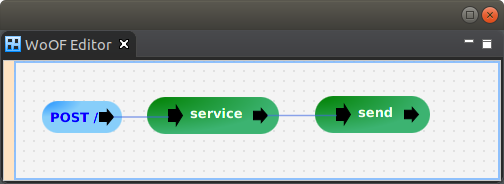

This tutorial demonstrates using ZIO.
To focus on ZIO, this tutorial uses a simple application that retrieves a message from database via ZIO effect.
The ZIO effect to retrieve a message from the database is the following:
object MessageService {
def getMessage(id: Int): ZIO[InjectMessageRepository, Throwable, Message] =
ZIO.accessM(env => ZIO.effect(env.messageRepository findById id orElseThrow(() => new NoSuchElementException(s"No message by id $id"))))
}
with the following environment:
trait InjectMessageRepository {
val messageRepository: MessageRepository
}
The effect is tested with the following code:
class MessageServiceTest extends AnyFlatSpec {
it should "retrieve Message" in {
val retrieve = for {
m <- MessageService.getMessage(1)
} yield m
val message = runtime(1, "Hello World").unsafeRun(retrieve)
assert("Hello World" == message.getContent)
}
def runtime(id: Int, content: String): Runtime[InjectMessageRepository] =
Runtime(new InjectMessageRepository {
override val messageRepository: MessageRepository = new TestMessageRepository(id, content)
}, Platform.default)
}
Note: the test is not comprehensive, however, demonstrates testing the ZIO effect.
To integrate ZIO into a First-Class Procedure add the following to the pom.xml:
<dependency>
<groupId>net.officefloor.scala</groupId>
<artifactId>officescala_zio</artifactId>
</dependency>
This will setup the configured procedures to handle the returned ZIO from functions.
As ZIO environments provide dependency injection, the OfficeFloor injected dependencies need to be mapped onto the required ZIO environment. The following function demonstrates the mapping:
def service(request: ZioRequest, repository: MessageRepository): ZIO[Any, Throwable, Message] = {
// Service Logic
val zio = for {
m <- MessageService.getMessage(request.id)
// possible further logic
} yield m
// Provide environment from dependency injection
zio.provide(new InjectMessageRepository {
override val messageRepository = repository
})
}
This function is configured into a procedure. The ZIO handling by OfficeFloor then:
This allows ZIO to be used for writing modular functions of the application. Then lets OfficeFloor compose these functions graphically together to form the application.
As per the WoOF configuration of the application:
The next configured procedure sends the message response:
def send(@Parameter message: Message, response: ObjectResponse[ZioResponse]): Unit = response.send(new ZioResponse(message.getContent))
To complete the code of the application, a repository implementation is required. Given the repository needs to be dependency injected, the implementation of the repository is via Spring:
@Repository
public interface MessageRepository extends CrudRepository<Message, Integer> {
}
See the Transaction Tutorial for further information on configuring Spring repositories.
The following test demonstrates using ZIO to service a HTTP request:
class ZioHttpServerTest extends AnyFlatSpec with WoofRules {
it should "get message" in {
withMockWoofServer { server =>
val request = mockRequest("/")
.method(httpMethod("POST"))
.header("Content-Type", "application/json")
.entity(jsonEntity(new ZioRequest(1)))
val response = server.send(request)
response.assertResponse(200, jsonEntity(new ZioResponse("Hi via ZIO")))
}
}
}
The next tutorial covers login via Google sign-in.